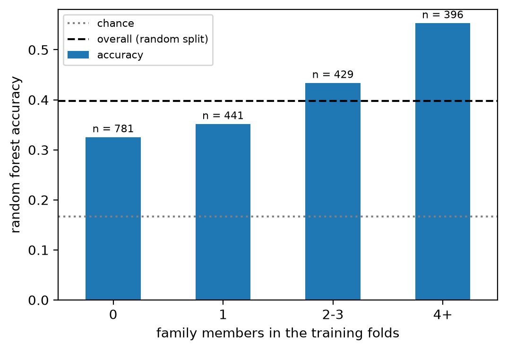

Where the inflation comes from
No relative in the training folds: 0.33, close to the family-split score. Four or more relatives: 0.55. The random-split accuracy is an average over these groups, so it depends on how many relatives the dataset contains.